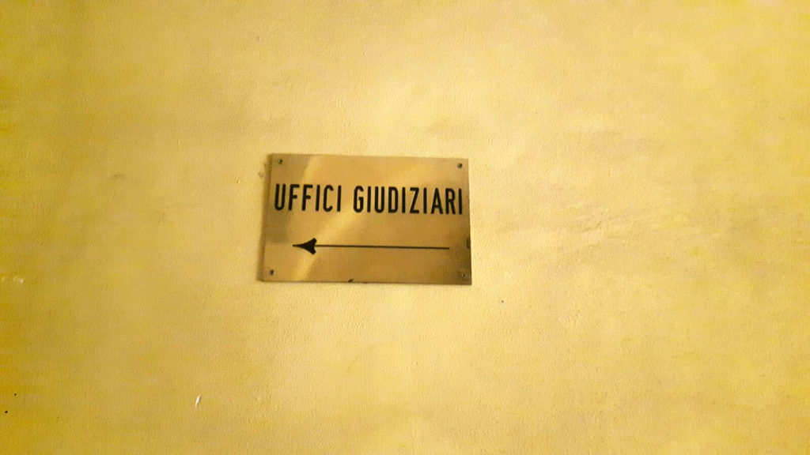

Dalla parte dell'ufficiale giudiziario
Ruolo fondamentale nell’iter che porta all’esecuzione di uno sfratto è quello dell’ufficiale giudiziario. L’ufficiale giudiziario è un dipendente pubblico che svolge funzioni ausiliarie del giudice ma ha anche propria autonomia in campo civile, amministrativo e stragiudiziale. Nel caso specifico l’ufficiale giudiziario ha non solo il compito di notificare all’esecutato gli atti che anticipano lo sfratto, ma anche di eseguirlo.

Intervista a Ivana Capobianco, ufficiale giudiziario di Bologna.
“C’è un aspetto fondamentale nel lavoro degli ufficiali giudiziari che nessuno conosce. Noi svolgiamo un’attività non solo esecutiva ma anche di mediazione; contattiamo i servizi sociali segnalando loro l’esistenza di nuclei familiari all’interno dei quali si riscontrano situazioni di grave disagio (presenza di minori, anziani o persone con gravi problemi di salute anche mentale), ovvero nuclei in grave difficoltà economica. Spesso queste famiglie rimangono misconosciute ai servizi sociali per le più svariate ragioni: vergogna, ignoranza, depressione o incapacità di accettare una realtà troppo dolorosa. Cerchiamo di mediare sul territorio svolgendo un lavoro molto importante, soprattutto per quegli sfratti la cui esecuzione viene impedita dalla presenza dei Social Log o altre associazioni o comitati che intervengono al fine bloccare lo sfratto”.
Come funziona l’attività dell’ufficiale giudiziario?
Per prima cosa vi è la notifica dell’atto di intimazione e della contestuale citazione per la convalida di sfratto, fatta pervenire all’inquilino tramite l’ufficiale giudiziario. Il giorno dell’udienza il giudice può concedere il così detto termine di grazia, al fine di garantire al conduttore un più ampio lasso di tempo per sanare la posizione debitoria con il locatore ed evitare così il rilascio dell’immobile abitato. Generalmente occorre più di un anno per arrivare alla convalida dello sfratto. L’esecuzione dello sfratto inizia invece con la notifica del preavviso ex art. 608 cpc atto nel quale l’ufficiale giudiziario fissa la data del così detto “primo accesso”. Solitamente cerchiamo di effettuare la notifica del preavviso a mano, così da avere un contatto diretto con l’inquilino e verificare le possibili criticità esistenti: se il nucleo si è già attivato per trovare un’altra abitazione, se vi sono adulti, minori, anziani, portatori di handicap, invalidi civili, persone con malattie fisiche o mentali, donne in gravidanza; situazioni che richiedono l’interessamento dei servizi sociali, del centro di salute mentale o del medico.
Il primo accesso è generalmente di rinvio, a meno che non ci si trovi di fronte ad una situazione di riconsegna spontanea, o di immobile abbandonato. Optiamo per il rinvio per dar modo alla parte interessata di attivarsi per reperire un altro alloggio, ovvero concludere il trasloco già iniziato e riconsegnare l’immobile libero e vuoto da persone e cose.
Generalmente il rinvio è di un mese. Attraverso il rinvio abbiamo quindi il tempo per sollecitare i servizi sociali ad intervenire, ma se l’interessato non accetta gli aiuti offerti, la questione resta purtroppo irrisolta, poiché i servizi sociali non possono intervenire se non c’è una richiesta di aiuto da parte della persona coinvolta.
Lo sfratto può essere eseguito al secondo accesso solamente se è la proprietà a richiederlo, in quanto l’Ufficiale non può procedere d’ufficio. Pertanto, se la parte istante non lo richiede, l’ufficiale giudiziario non può eseguire lo sfratto, nè tanto meno può disporre un rinvio dello stesso, salvo l’esistenza di difficoltà oggettive che ne impediscano l’esecuzione, ad esempio la mancanza del medico se una persona si dichiara malata o l'assenza di forza pubblica qualora l’inquilino opponga resistenza e si rifiuti di abbandonare spontaneamente l’immobile.
Nel territorio del Comune di Bologna abbiamo solamente due pattuglie che prestano assistenza agli sfratti e ciò crea purtroppo disservizi. Non possedendo il dono dell’ubiquità non riescono a garantire assistenza a tutti gli sfratti programmati per la giornata. Molto spesso quando ci sono i picchetti antisfratto, anche se la forza pubblica è presente non interviene, limitandosi a garantire l’incolumità dell’ufficiale giudiziario che ha il compito di garantire il mantenimento dell’ordine pubblico. La forza pubblica è necessaria anche per altre ragioni: a volte troviamo armi o droga e diventa necessario il loro intervento. L’esecuzione di uno sfratto è condizionata dunque da tanti fattori.
Lei si informa riguardo la storia delle persone da cui si presenta per l’esecuzione dello sfratto? È previsto un controllo in itinere o successivo?
Certo, non possiamo presentarci senza prima conoscere le circostanze e le situazioni che interessano la parte esecutata.
È lei a decidere l’orario in cui presentarsi per eseguire lo sfratto?
Per i rinvii l’orario è libero, decidiamo l’orario in cui presentarci in base all’organizzazione del lavoro in quella mattinata. Per quanto riguarda invece l’accesso esecutivo, c’è un orario che è quello fissato con la forza pubblica. L’orario deve essere preciso perché in quel momento dobbiamo far convogliare tutti i soggetti necessari per l’esecuzione dello sfratto: forza pubblica, medico, veterinario, fabbro. L’esecutato però non è al corrente dell’orario ma conosce solo il giorno esatto.
Su Bologna gli sfratti si eseguono di solito nella mattinata dalle 8 alle 14.
Le è mai capitato che la forza pubblica avesse necessità di usare la forza per tirare fuori le persone da un appartamento?
Ci sono stati dei casi in cui le persone hanno faticato ad accettare uno sfratto, poiché non sapevano dove andare. Il nostro compito è quello di mettere in esecuzione un provvedimento emesso dal giudice tutelando tutte le parti. Per me sono sullo stesso piano: c’è il diritto del proprietario ad ottenere la consegna dell’immobile e c’è la persona che deve essere tutelata nei suoi diritti fondamentali, quali il diritto alla salute, nei casi in cui siano portatori di gravi patologie tali da mettere a rischio la loro vita.
Si è mai imbattuta in picchetti antisfratto? Come funziona in questo caso?
Cerchiamo di mediare, di parlare con il rappresentante di questi picchetti antisfratto. Io ho avuto a che fare con diversi di loro. Ciò che cerco di far capire a questi gruppi che impediscono l'esecuzione di uno sfratto è che questa situazione non deve ricadere sul proprietario che su quella casa paga le tasse come se percepisse un affitto. Se da una parte loro tutelano l’esecutato, dall’altra parte c’è anche un proprietario che subisce un pregiudizio economico. Penso debba essere il Comune a trovare una soluzione abitativa per queste situazioni che, ultimamente, sono aumentate in seguito alla crisi economica e all'immigrazione.
Per gli sfratti degli alloggi Erp invece come funziona?
La situazione che caratterizza gli alloggi ERP è molto complessa. Gli sfratti Acer si basano molto sui rinvii. Il Comune tiene conto delle situazioni e si ha più elasticità con la possibilità di poter rientrare in alcuni accordi e di pagare in maniera rateizzata. Nella maggior parte dei casi, Acer esegue uno sfratto quando si presenta una situazione di morosità sulla morosità, ciò significa che risultano non pagati molti arretrati.
L’Acer carica il fascicolo di esecuzione dello sfratto 15 giorni prima e dopo il primo accesso chiede a noi ufficiali giudiziari di fissare una data al fine di mettere lo sfratto in esecuzione.
Sono numerosi gli sfratti eseguiti per gli alloggi Erp? Più di quelli dei privati?
Sì, la maggior parte. Acer ha 738 fascicoli di richiesta sfratto cronologici dal primo gennaio 2016 a oggi su 3646 cronologici. Questi 3646 cronologici sono ripetuti sui mesi: ogni fascicolo di sfratto viene infatti ricaricato fino a quando quest’ultimo non viene eseguito. Almeno un 30/40% dei fascicoli di richiesta di sfratto sono Acer.
Avete delle basi di psicologia per affrontare determinate situazioni?
No, si impara tutto sul campo. Uno sfratto non è mai facile e non è mai uguale a quello che hai eseguito la volta precedente. Ci sono situazioni che si ripetono, quelle in cui l’immobile è vuoto, ma ci sono anche dei casi in cui umanamente ti rendi conto di ricoprire un ruolo non facile, soprattutto quando ci si mette anche nei panni di chi viene sfrattato.